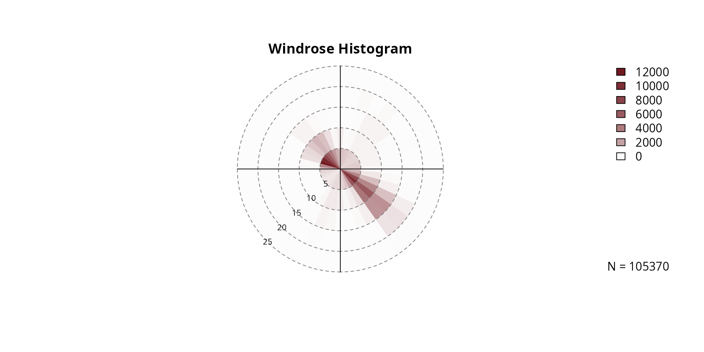
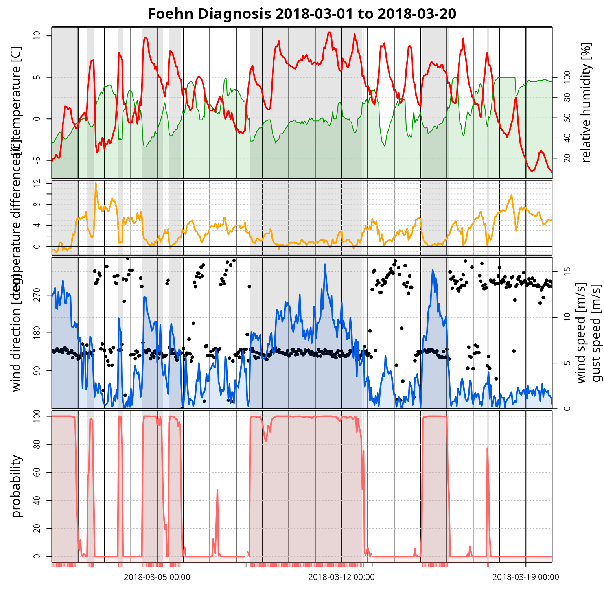

vignettes/plotting.Rmd
plotting.RmdWindrose
The foehnix package comes with methods to create
windrose plot for foehn classification models (see getting started, foehnix reference)
and observation data. Two types of windrose plots are available:
- density: empirical density
- histogram: empirical circular histogram
Windrose Plot for Observation Data
The windrose
function can be called with a set of (observed) wind direction and wind
speed values. Wind direction has to be the meteorological wind direction
in degrees ([0, 360], 0 and 360
corresponds to wind coming from North, 90 for wind from
East, 180 for wind from South, and 270 from
West).
## dd ff rh t
## 2006-01-01 01:00:00 171 0.6 90 -0.4
## 2006-01-01 02:00:00 268 0.3 100 -1.8
## 2006-01-01 03:00:00 115 5.2 79 0.9
## 2006-01-01 04:00:00 152 2.1 88 -0.6
## 2006-01-01 05:00:00 319 0.7 100 -2.6
## 2006-01-01 06:00:00 36 0.1 99 -1.7
# Plotting windrose
windrose(data$dd, data$ff, type = "density")
windrose(as.numeric(data$dd), as.numeric(data$ff), type = "histogram")
Windrose Plot for foehnix Models
Windrose plots can also be created for foehnix foehn
classification models if wind speed and wind direction information has
been provided to the foehnix function when
estimating the classification model.
# Loading the demo data set for Tyrol (Ellboegen and Innsbruck)
data <- demodata("tyrol") # default
print(head(data))## dd ff rh t crest_dd crest_ff crest_rh crest_t diff_t
## 2006-01-01 01:00:00 171 0.6 90 -0.4 180 10.8 100 -7.8 2.87
## 2006-01-01 02:00:00 268 0.3 100 -1.8 186 12.5 100 -8.0 4.07
## 2006-01-01 03:00:00 115 5.2 79 0.9 181 11.3 100 -7.4 1.97
## 2006-01-01 04:00:00 152 2.1 88 -0.6 178 13.3 100 -7.5 3.37
## 2006-01-01 05:00:00 319 0.7 100 -2.6 176 13.1 100 -7.1 5.77
## 2006-01-01 06:00:00 36 0.1 99 -1.7 184 10.0 100 -6.9 5.07
# Estimate a foehnix classification model
filter <- list(dd = c(43, 223), crest_dd = c(90, 270))
mod <- foehnix(diff_t ~ ff + rh, data = data, filter = filter,
switch = TRUE, verbose = FALSE)
# Plotting windroses
windrose(mod)By default, windrose expects that the parameters are
called dd (wind direction) and ff (wind
speed), however, custom names can also be used.
# Loading the demo data set for station Ellboegen and Sattelberg (combined)
data <- demodata("tyrol") # default
names(data) <- gsub("dd$", "winddir", names(data))
names(data) <- gsub("ff$", "windspd", names(data))
print(head(data))## winddir windspd rh t crest_winddir crest_windspd
## 2006-01-01 01:00:00 171 0.6 90 -0.4 180 10.8
## 2006-01-01 02:00:00 268 0.3 100 -1.8 186 12.5
## 2006-01-01 03:00:00 115 5.2 79 0.9 181 11.3
## 2006-01-01 04:00:00 152 2.1 88 -0.6 178 13.3
## 2006-01-01 05:00:00 319 0.7 100 -2.6 176 13.1
## 2006-01-01 06:00:00 36 0.1 99 -1.7 184 10.0
## crest_rh crest_t diff_t
## 2006-01-01 01:00:00 100 -7.8 2.87
## 2006-01-01 02:00:00 100 -8.0 4.07
## 2006-01-01 03:00:00 100 -7.4 1.97
## 2006-01-01 04:00:00 100 -7.5 3.37
## 2006-01-01 05:00:00 100 -7.1 5.77
## 2006-01-01 06:00:00 100 -6.9 5.07
# Estimate a foehnix classification model
filter <- list(winddir = c(43, 223), crest_winddir = c(90, 270))
mod <- foehnix(diff_t ~ windspd + rh, data = data, filter = filter,
switch = TRUE, verbose = FALSE)
# Plotting windroses
windrose(mod, ddvar = "winddir", ffvar = "windspd")
Default Time Series Plot
TODO: Write vignette.
# Loading the demo data set for station Ellboegen and Sattelberg (combined)
data <- demodata("tyrol")
filter <- list(dd = c(43, 223), crest_dd = c(90, 270))
mod <- foehnix(diff_t ~ ff + rh, data = data, filter = filter,
switch = TRUE, verbose = FALSE)
# Time Series Plot
tsplot(mod, start = "2018-03-01", end = "2018-03-20")